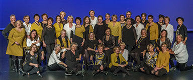

<div class="event-info">
	<div>
		<div class="img-wrap">
	
		</div>
		<div class="songs">
			<p>...</p>
			<p>...</p>
			<p>...</p>
			<p>...</p>
			<p>...</p>
		</div>
		<div class="content-wrap">
    <p><strong>Zanggroep Experiment uit Hoofddorp</strong></p>
	<p>Zanggroep Experiment bestaat uit 40 vrouwen afkomstig uit de Haarlemmermeer.</p>
	<p>Het repertoire bestaat uit Engelse, soms Nederlandse popmuziek uit de jaren 70 tot nu.</p>
	<p>Zij treden regelmatig op en doen mee aan diverse korendagen.</p>
	<p>&nbsp;</p>
	<p>Dirigent: Dirigent: Wendy Vos / Oksana Polman</p>
	<p>&nbsp;</p>
	<p><a href="https://www.zanggroepexperiment.nl" target="_blank">https://www.zanggroepexperiment.nl</a></p>
		</div>
	</div>
</div>